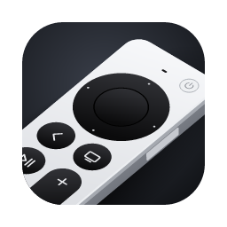
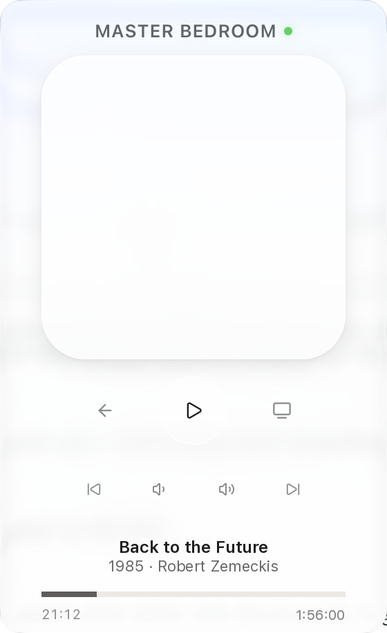

Apple TV Remote
Your Apple TV, one click away in the menu bar.
Free for macOS and Windows.

Scroll with two fingers on the remote's touchpad, and click to selectSwipe or tap the remote
- Navigate
- ←↑↓→
- Select
- Enter
- Play or pause
- Space
- Menu
- Esc
- Home
- T
- Top menu
- G
- Skip back or ahead
- []
- Volume
- +−
Everything the Siri Remote does. Nothing to pick up.
Touchpad
Scroll with two fingers on the touchpad to move around, and click to select. Same as the remote on your couch.
Now playing
See what's on, then play, pause, and scrub from the seek bar.
Always handy
Press ⌘⇧RWinShiftR to show or hide it from any app. Hold OptionAlt to see every button's key.
Set up in a minute.
-
Download
Get the installer, open it, and drag Apple TV Remote to Applications. and run it.
-
Open it
The app isn't notarized yet, so macOS blocks the first launch. Open System Settings, go to Privacy & Security, and click Open Anyway.
If Windows SmartScreen appears, click More info, then Run anyway.
-
Pair
Pick your Apple TV and type the code it shows on screen. Your computer and Apple TV need to be on the same network.
Free and open source.
Apple TV Remote is built in the open on GitHub. Read the code, watch for new releases, or send a pull request.